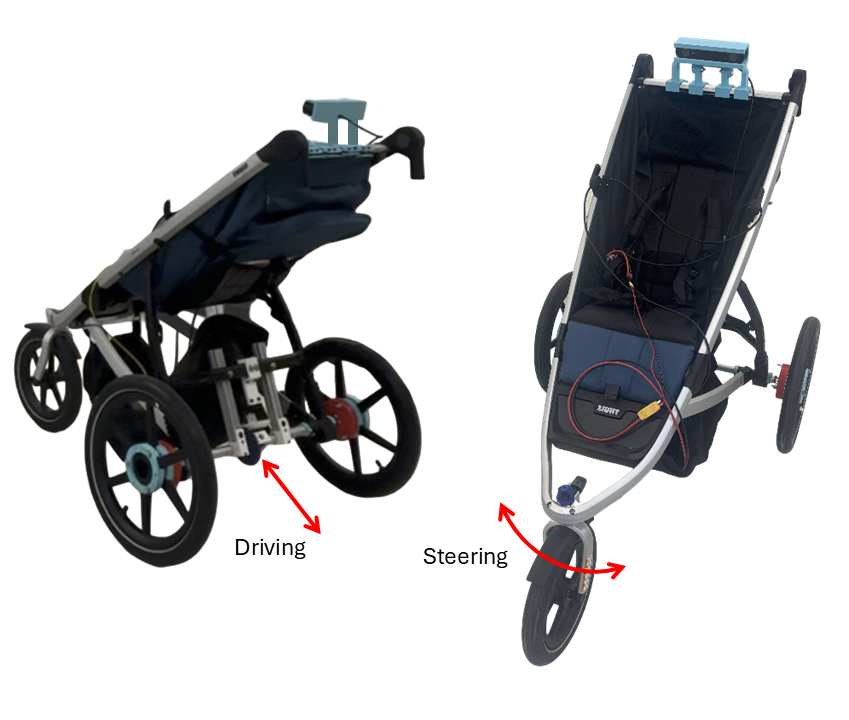

Front-Following Stroller Robot
Amith Polineni – Research Intern, UVA VICTOR Robotics Lab
Motivation
This project is centered around developing a front-following stroller robot designed to escort a person at running speed. Unlike traditional follow-bots that trail behind, this system positions itself in front of the user. The core innovation involves using pose estimation to infer the user’s intended direction based on body orientation.
To operate effectively and safely, the robot must continuously assess the environment through path planning and obstacle navigation. This allows it to determine a collision-free path that keeps it in front of the person. The project began with simpler back-following demos to test the basic hardware setup and verify initial pose estimation algorithms.
Differential Gearbox Strengthening
One major mechanical challenge encountered during early testing was the reliability of the differential gearbox. Under sudden changes in load—such as when accelerating or navigating rough surfaces—the bevel gears would occasionally skip. This not only caused noisy operation but also raised concerns about long-term durability.
To address the issue, the gearbox mount was redesigned and reinforced to provide greater stability and structural support. This upgrade significantly reduced mechanical slippage and improved drivetrain robustness.


Steering Upgrade and LIDAR Mounting
Steering with a front caster wheel introduces a unique design challenge: as the stroller moves forward, natural caster dynamics tend to realign the wheel straight. This means the steering motor must fight against these forces to maintain accurate turning, especially during quick adjustments or tight maneuvers.
To solve this, I upgraded the front steering system with a high-torque motor and a planetary gearbox, providing the necessary force to hold the wheel steady under dynamic conditions. Alongside this, I redesigned the steering assembly in CAD to include thicker supports and stronger mechanical connections, ensuring minimal flex under torque.


[Left] Old steering assembly using a weaker mount and unsupported stepper motor [Right] CAD model of the new steering assembly with planetary gearbox and reinforced structure
On the sensing side, I began integration of an OS1 LIDAR sensor, which provides a 3D point cloud of the environment to detect obstacles and plan safe paths. Due to its high cost and sensitivity, it was important to design a robust and vibration-resistant mounting solution.
I created a custom LIDAR mount with precise 8020 slot inserts that securely attach the sensor to the robot’s aluminum frame. This setup ensures consistent alignment while minimizing noise from vibrations, which is critical for maintaining accurate perception.


Maintain Distance Demo
This demo tested the robot’s ability to follow a person at a constant, safe distance. Using pose estimation and distance data, the robot dynamically adjusted its speed and turning rate to maintain position in front of the person while they walked. Initially, the motion was jerky and unresponsive, but improvements were made in both software and control logic to fix this.
[Left]: Poor smoothing resulted in erratic acceleration and inconsistent following behavior. [Right]: Tuned smoothing using low-pass filtering made the robot’s response much more fluid and predictable.
- Smoothed Motion (Low-pass Filtering): Reduced jitter in speed commands by filtering out high-frequency changes in pose estimation. This dramatically improved responsiveness without introducing lag.
- Dual Input Mode (Joystick + Autonomous): Enabled live override via joystick during testing, which made debugging and safety control easier. A button toggle switched between autonomous and manual mode.
- Angular Correction via PID Control: Used proportional-integral-derivative control to smoothly rotate the robot based on the person’s lateral offset in the camera frame.
- Visualization & Diagnostics: Realtime printouts in the command line showed the current person distance and robot response. To make it readable at a glance, I used emoji indicators like 🟢 for tracking state.
[AUTO] 🟢 Person @ 1.16m → linear.x: 1.77, angular.z: 0.21
[AUTO] 🟢 Person @ 1.58m → linear.x: 0.51, angular.z: 0.00
Pose Estimation
To guide itself effectively, the stroller needs to understand where the person intends to move. This is achieved using pose estimation — the process of interpreting human body position and orientation from camera data. The robot uses a ZED stereo camera mounted on the stroller to detect and track body landmarks in 3D.
The ZED camera includes built-in body tracking modules, which made implementation easier. Because it relies on stereo vision rather than infrared, it performs reliably outdoors where many depth cameras struggle due to sunlight interference. As part of system upgrades, I transitioned from an older ZED model to the newer ZED2i, which offered improved outdoor accuracy and better ROS2 driver support. This also required updating the CUDA and body tracking SDK to maintain compatibility.

Figure: The ZED camera detects and tracks body joints in real time using stereo vision.
In a separate pose estimation experiment, I also explored Google's Mediapipe framework.
Here, I
used an
Intel RealSense camera and applied pose landmark detection to locate shoulder positions. From these, I
computed a
normal vector across the shoulders to infer which way the person was facing — a strong indicator of
where
they
intended to walk.

Figure: Mediapipe pose estimation with a red arrow showing orientation based on shoulder landmarks.
Around-Person Algorithm
Building directly on the shoulder orientation vector shown in the Mediapipe demo, I used the same concept to simulate a person in 2D space. In the animations below, the red circle and arrow represent the human and their direction of motion (based on the normal vector), while the blue circle and arrow represent the robot and its heading.
To test control logic for leading the person from the front, I built a simulation environment that models the robot’s movement relative to the human’s changing position and orientation. This setup allowed me to iterate on path planning and response logic without deploying the physical robot.

Figure: A more advanced animation where the robot (blue) adjusts to stay in front of the person (red) with dynamic path planning, safety buffer, and realistic velocity limits.


Earlier unsophisticated versions of the animation where collions were possible and linear movement wasn't implemented
Features of this simulation include:
- Person orientation controlled by mouse: During simulation, I controlled the red arrow’s direction with mouse movement, mimicking a human turning in place.
- Maintains fixed radius in front of person: The robot tries to stay a fixed distance ahead of the user, adjusting its path as needed.
- Safety bubble around person: A circular zone around the person that the robot is not allowed to enter, enforcing a buffer space.
- Dynamic path planning: The robot selects either straight (linear) or smooth (Bezier) trajectories based on distance and orientation offset.
- Realistic velocity limits: Robot speed is capped to prevent unrealistic movement or instability.
- Live
cmd_vel: The robot’s command velocity outputs (linear and angular) are visualized in real time. - Failsafe handling: If the robot cannot find a viable path within constraints, it stops or waits for the person to reorient.
Electronics System Overview
After upgrading the robot’s mechanical components and improving its motion algorithms, I turned to redesigning the electronics for safety, modularity, and power stability. The wiring diagram below shows the entire system architecture, from battery to sensors to actuators.

Figure: Electronics layout including power regulation, sensor data paths, and motor control systems.
The entire system is powered by a 6S 22.2V LiPo battery. To protect the battery from over-discharge, a low-voltage shutoff module was added as the first component in the chain. From there, power is branched and regulated into subsystems via buck converters and a central relay-controlled distribution bus:
- 22.2V to 5V buck converter: Supplies logic-level voltage to the relay circuit and emergency stop button. The E-STOP can instantly shut off main system power.
- 22.2V to 14.8V buck converter: Feeds a Spektrum™ Firma™ ESC, which powers the rear differential DC motor.
- 22.2V to 11.1V buck converter: Feeds the stepper motor driver (TB6600), which runs the high-torque front steering motor.
On the sensing and control side, a laptop running ROS serves as the core controller. It connects via USB and serial to:
- A ZED 2i stereo camera for pose estimation and 3D tracking.
- A LIDAR sensor for obstacle detection.
- An Arduino microcontroller that relays commands to the motor drivers.
- A joystick for manual override input during development and testing.
The diagram also shows data pathways in green and USB control in purple. These help clarify which components are sending control signals and which are sending sensor streams. Together, this architecture balances high-power drivetrain needs with delicate sensor inputs, and ensures safe shutdown behavior in the event of an emergency.